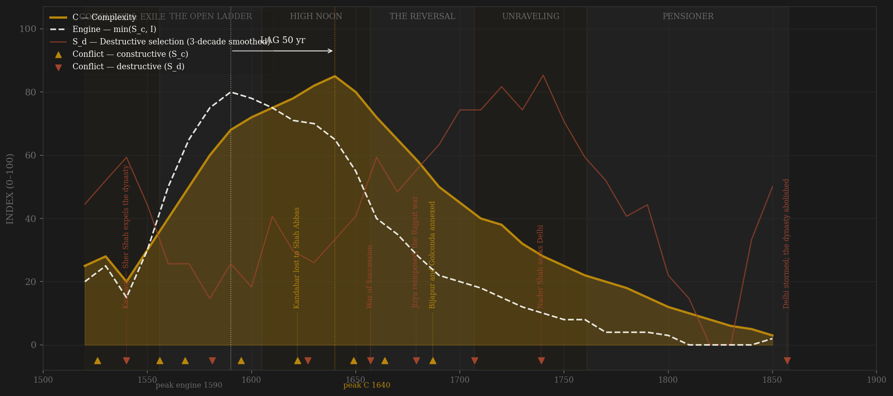
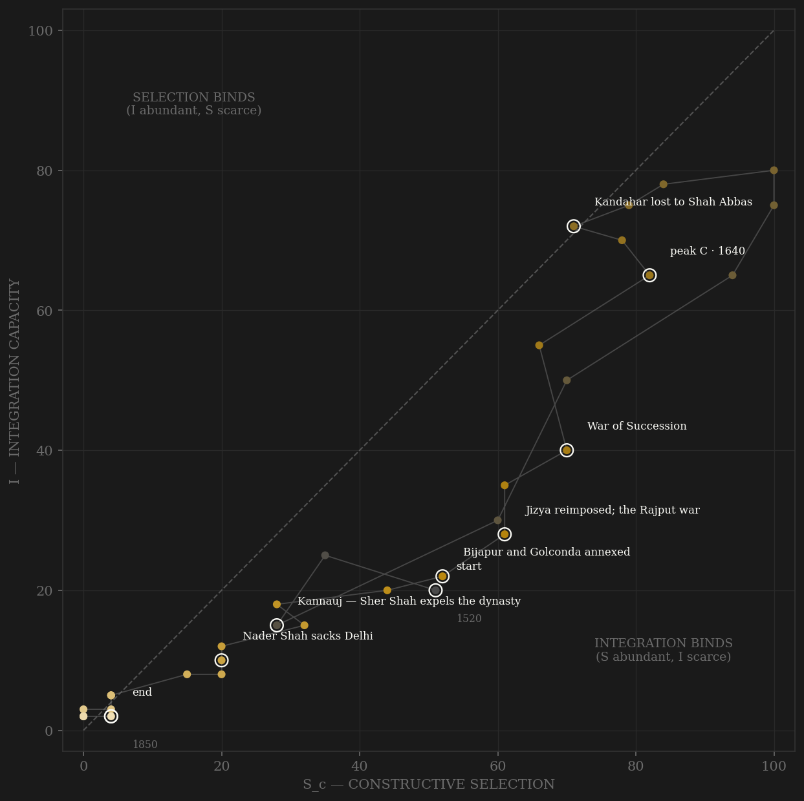

Mughal is the clearest elite-entry story in the sample. Akbar built a rank system — zat and sawar grades, promotion audited by the branding of horses, estates escheating to the crown at death so that no family could stop competing — and threw it open to Rajputs, Iranians, Turanis, and Hindustani Muslims alike, with the jharoka window giving daily petition access past the whole apparatus. The contestability engine crests in the 1590s, at the exact decade the Ain-i-Akbari codifies the ladder. Complexity keeps compounding for another fifty years — a quarter of world GDP, the Taj rising over Agra, Shah Jahanabad built from revenue the zabt system could still actually collect — peaking in the 1630s–40s. The lag reads +50, inside the preregistered window, and for once both definitions agree: code selection as external war only, or as the full contestability composite, and the peaks do not move. Then the mechanism runs in reverse. The 1657 war of succession settles the apex by fratricide; Aurangzeb reverses the incorporation policy that had made the ladder work; the jagirdari crisis leaves more rank-holders than land to pay them, and promotion becomes paper. The red line climbs from 1657 and never comes down: three emperors in seven years after 1707, an emperor strangled by his kingmakers in 1719, Nader Shah collecting the Peacock Throne in 1739 from a state already hollow. The last century of rows is a coda — a dynasty that outlived its own state by a hundred years, until 1857 ends even the name.

The trajectory enters at the right wall — a conquest band with maximal contest and almost no coordination — and dips immediately: Sher Shah throws the dynasty out of India entirely in 1540, and the path nearly restarts. From the 1550s it climbs both axes at once, hugging the diagonal through Akbar's reign as the ladder and the revenue machine grow together — the engine's peak decades sit almost exactly on the S=I line, the most balanced apex in the sample outside Gupta. Integration crests in the 1590s and is already sagging when complexity peaks in the 1640s: the empire's noon is integration-bound, selection still abundant while the coordination that prices it erodes. Then the long fall, and its shape is the diagnostic. Ming died at the right wall, contest at full throttle; Rome died at the left wall, starved of contest with coordination merely halved. Mughal slides down the diagonal the way it climbed — both axes failing together, the ladder freezing as the jagirs run out, the frontier contests decaying into plunder — and dies at the origin. By 1810 there is nothing left to measure on either axis: a court that is a poetry circle, a state that is a pension.
Coded by locus and target, never by outcome. The Mughal ledger is dominated by a single institutional fact: the Timurid house never adopted primogeniture, so every transfer of power from 1627 onward is a war aimed at the throne itself — succession violence is not an accident of the decline but a periodic, endogenous S_d pulse built into the constitution. The 1657–59 war is the hinge: the within-rules faction contest of Dara's court and Aurangzeb's Deccan establishment collapses into Samugarh, a father imprisoned, three brothers dead. Aurangzeb's reversals are coded S_d with care — not because rebels won, but because the locus of the policy was the state's own coordination machinery: reimposing the jizya and seizing Marwar aimed directly at the incorporation bargain that held the nobility together, and Jat, Satnami, Sikh, and Rajput risings follow each reversal within the decade. The state manufactured its own destructive selection. Against this, Shivaji's sack of Surat stays constructive by the Hannibal rule — a port burned, the machinery untouched — while Nader Shah in 1739 and the storming of Delhi in 1857 are S_d despite external origin, by the same Alaric rule that codes every core-destroying blow.
| YEAR | CONFLICT | CODE | CODING RATIONALE |
|---|---|---|---|
| 1526 | First Panipat | Sc | Founding external contest — Babur's cannon against the Lodi sultanate; rivalry from the first year |
| 1540 | Kannauj — Sher Shah expels the dynasty | Sd | Capital lost, dynasty driven into Persian exile — core penetrated by a rival state-builder, the Adrianople rule |
| 1556 | Second Panipat | Sc | The throne re-won in open contest against Hemu; external locus, machinery rebuilt after |
| 1568 | Chittor and the Rajput wars | Sc | Frontier conquest contest — and the incorporation bargain that follows turns enemies into mansabdars |
| 1581 | Bengal army rebellion / Mirza Hakim's bid | Sd | Mansabdars in arms against the branding audits; a rival Timurid proclaimed in Kabul — internal locus |
| 1595 | Deccan wars open (Ahmednagar) | Sc | Peer contest with the sultanates begins; the frontier that will discipline the empire for a century |
| 1622 | Kandahar lost to Shah Abbas | Sc | The Safavid contest at its sharpest — peer rivalry at the empire's hinge fortress, core untouched |
| 1627 | Succession of 1627–28 | Sd | Shahryar blinded, Dawar Bakhsh a puppet then killed — the first full war for the throne; Mahabat Khan had seized the emperor's person the year before |
| 1649 | Kandahar sieges (1649–53) | Sc | Three failed sieges against Safavid Iran; with Balkh 1646–47, the peak of peer-polity contest |
| 1657 | War of Succession | Sd | Samugarh, Shah Jahan imprisoned, Dara paraded and executed — the machinery's apex settled by fratricide; the within-rules contest never re-institutionalizes |
| 1664 | Shivaji sacks Surat | Sc | Peer predation on a port; the levy machinery never broke — the Hannibal rule |
| 1679 | Jizya reimposed; the Rajput war | Sd | Policy aimed at the state's own incorporation bargain — Marwar seized, Prince Akbar rebels 1681; each reversal generates its rising within the decade |
| 1687 | Bijapur and Golconda annexed | Sc | The last great peer wars — external conquest while the core held; the prize floods the ranks the jagirs cannot pay |
| 1707 | Jajau | Sd | Bahadur Shah over Azam's corpse, Kam Bakhsh dead in 1709 — the second full succession war; the empire never has another peaceful transfer |
| 1739 | Nader Shah sacks Delhi | Sd | Karnal, the Delhi massacre, the Peacock Throne carried to Iran — external origin, core-destroying locus: the Alaric rule |
| 1857 | Delhi stormed; the dynasty abolished | Sd | Terminal — the rising borrowed the Mughal name but no Mughal machinery commanded it; the princes shot, Zafar exiled, the title extinguished 1858 |
| COMPONENT | GRADE | BASIS |
|---|---|---|
| S_c A — Elite-entry (0.40) | ○ scholar-coded | Mansabdari openness ordinal: zat/sawar promotion by service, dagh audits, escheat, jharoka access, incorporation breadth (Rajput/Irani/Turani/Hindustani). Coded per decade from Richards (New Cambridge History I.5), Athar Ali's nobility tables, Habib's agrarian-crisis account of the jagirdari freeze |
| S_c B — External rivalry (0.30 cap) | ○ scholar-coded | Safavid/Uzbek contests (Kandahar 1622, 1649–53; Balkh 1646–47), Deccan sultanate wars, Maratha peer predation while the core held. This channel alone = the frozen Sc_v1_combat column |
| S_c C — Internal within-rules (0.30) | ○ scholar-coded | Court faction competition inside the mansab rules pre-1657 (ibadat-khana, mahzar 1579, Nur Jahan junta vs Khurram faction); scored near zero after the 1657 collapse into arms |
| S_d — Destructive | ○ scholar-coded | Locus-and-target ledger: every succession war from 1627, rebellion-generating reversals (jizya 1679, Marwar), jagirdari-crisis zamindar violence, post-1707 fragmentation, Nader Shah 1739 and Delhi 1857 by the Alaric rule. Per-decade rationale in coding_ledger.csv |
| I — Integration | ○ scholar-coded | Inherited composite column (zabt revenue reach, sulh-i-kul breadth, trade networks) — preserved untouched from the original build |
| C — Complexity | ○ coded + sparse anchors | Inherited column; scholar-coded with Maddison GDPpc anchors (1600–1850) and world-GDP-share estimates — anchors are point estimates, not a series |
| E — Entropy / R — Population | ○ scholar-coded | Inherited columns; R is subcontinent population in millions (McEvedy), not imperial subjects — flagged, never used in the lag |
34 decade rows (1520–1850). Sc/Sd decomposition built STRAIGHT to definition v2 (contestability composite, 0.40 elite-entry / 0.30 external hard cap / 0.30 internal within-rules) by scripts/build_mughal_sicre.py, 2026-07-06; per-decade channel scores and rationales in data/raw/mughal/coding_ledger.csv; all pre-existing columns preserved. BOTH DEFINITIONS REPORTED per the v2 amendment: v2 contestability lag +50 (engine 1590 → C 1640, PASS); v1 external-war-only lag +50 (same peaks, PASS) — the definitions agree here; no verdict flip. Frozen protocol throughout: 3-decade centered rolling mean, engine = min(S_c, I). Post-1760 rows are the pensioner coda, retained for the death-shape but carrying no engine weight. Rebuild: build_mughal_sicre.py, then polity_report.py --slug mughal.